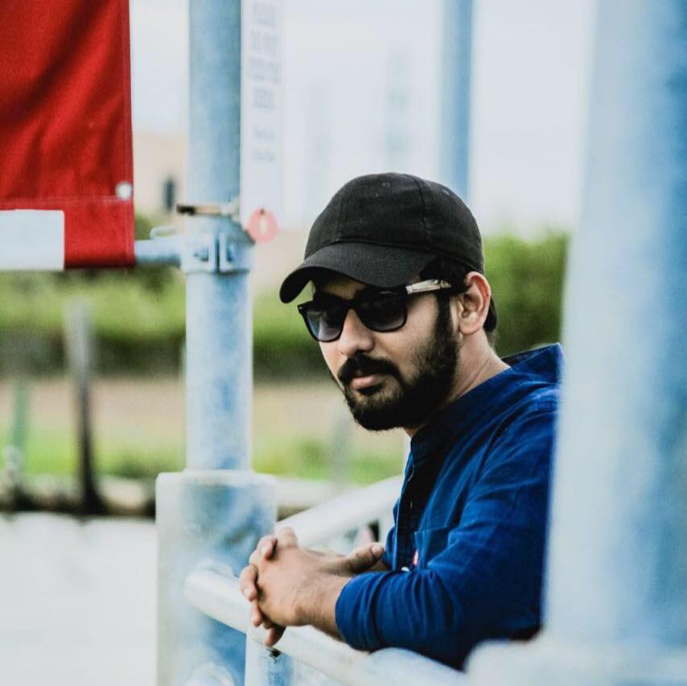

Pritam Dsouza (born April 20, 1992) is an Indian celebrity chef, entrepreneur writer and television personality. Dsouza stars in the TV show Khana Khazana, which is the longest running show of its kind in Asia; it broadcasts in 120 countries and in 2010 had more than 500 million viewers. He also launched his own Food Food channel, in January 2011. |
|
|  | Ronit Jha (born November 14, 1991) is an award-winning Michelin starred Indian chef, restaurateur, and cookbook writer, filmmaker, humanitarian and the judge of MasterChef India Season 2, 3, 4, 5 and Masterchef Junior. He is based in New York City. In 2011, People magazine named Khanna in the list of Sexiest Men Alive and also referred to him as "The Hottest Chef of America" |